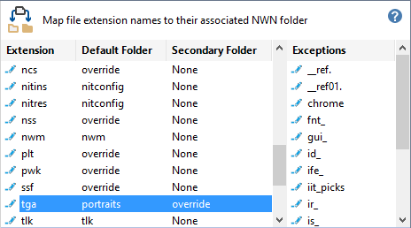
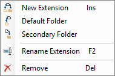
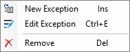
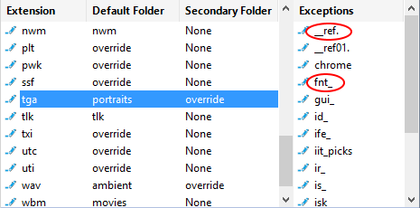

This table is at the heart of how the Installer Tool determines where files are placed in the Neverwinter Nights Installation or User Files directory. The default configuration should accommodate almost all of your requirements, however, you can add, remove or change how file extension names are handled.

Click the Edit Icon, Right-Click, Double-Click or press the Space Bar to access the Map Extensions or Exceptions menu.


Define an extension map explains how to specify the file name extension attributes listed in the following sections.
Defines which file extension names are processed when creating Mod Installers. The Installer Tool ignores any file that has an extension name which is not specified in the Extensions map.
Specifies the Installation or User Files folder to use as the target directory when installing files.
Specifies an alternative Installation or User Files folder to use as the target directory when installing files.
When a Secondary Folder is defined, you can use the Move to Folder from the File menu to change the location within an existing Mod Installer. For example, you can move 2da files from Portraits to Override and from Override to Portraits.
Specifies conditions for using the Secondary instead of the Default Folder. When the Secondary Folder is None, Exceptions are disabled.
Exceptions are specified as a Prefix (does not end with a period) or Suffix (ends with a period). Any file that starts with a defined Prefix or ends with a defined Suffix is placed in the Secondary Folder instead of the Default Folder.
For example, fnt_dialog16x16.tga and ttu01__ref.tga are placed in the Override folder instead of Portraits because fnt_dialog16x16.tga starts with the fnt_ Prefix and ttu01__ref.tga ends with the __ref. Suffix.

Work with the Extensions map